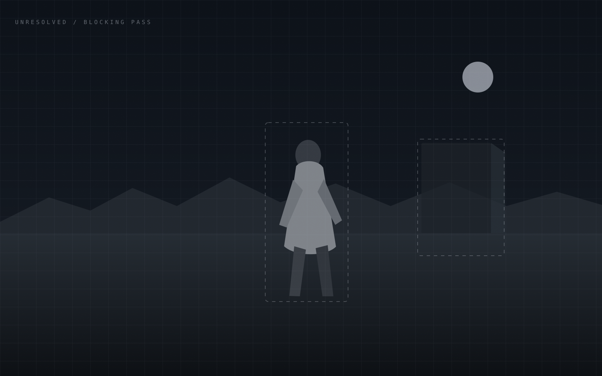

A / LAB MATRIX
Render what
you imagine.
Create images. Shape them with references. Put them in motion. Keep the thread alive.
One image resolves from four independent lab cells—the same modular logic as the locked R, without turning the logo into wallpaper.

B / RESOLVE APERTURE
Ideas, rendered
into reality.
Move across the frame to resolve the work from first attempt to finished image.
The hero is one controllable render surface. Pointer position changes the draft/final boundary; reduced motion settles to a static final-weighted split.
C / CREATIVE INSTRUMENT
Make the
next frame.
The media is the workspace. Controls appear around the work instead of competing with it.
The first viewport behaves like a creative instrument: one dominant canvas with compact truthful controls attached to the work, not a dashboard screenshot inside a marketing card.